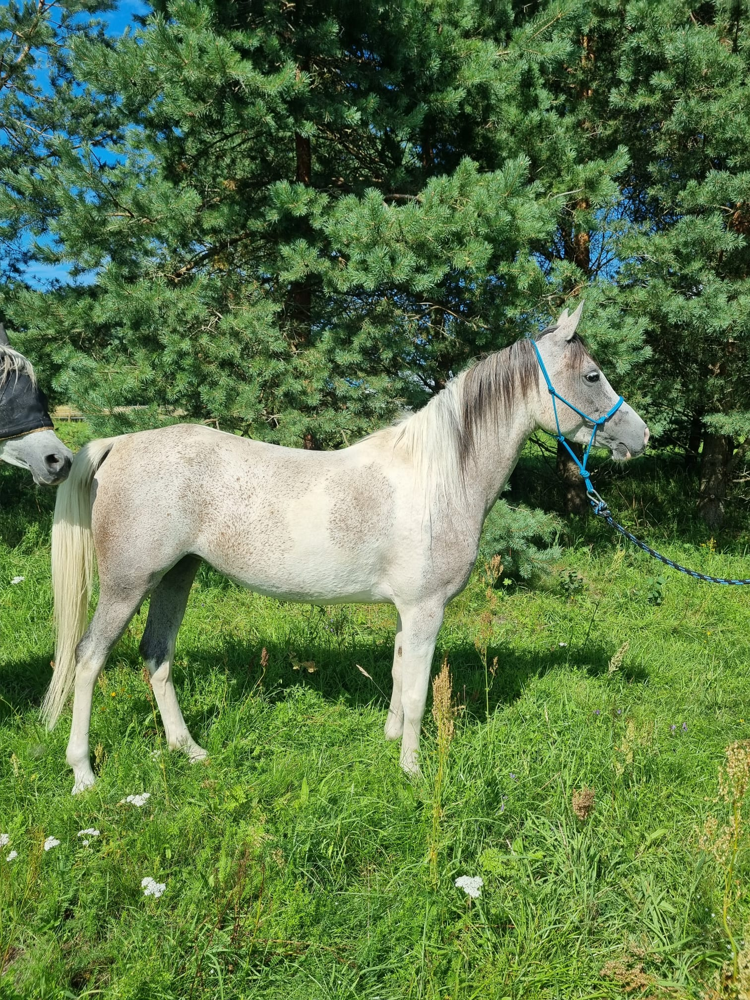
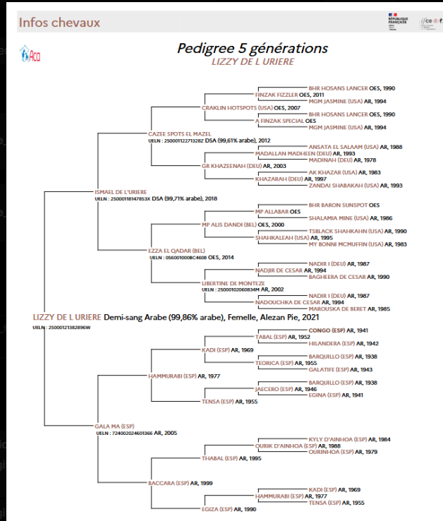
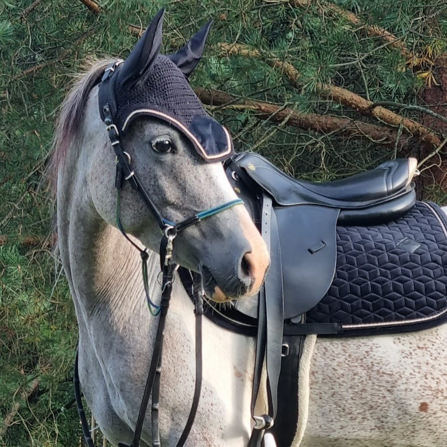
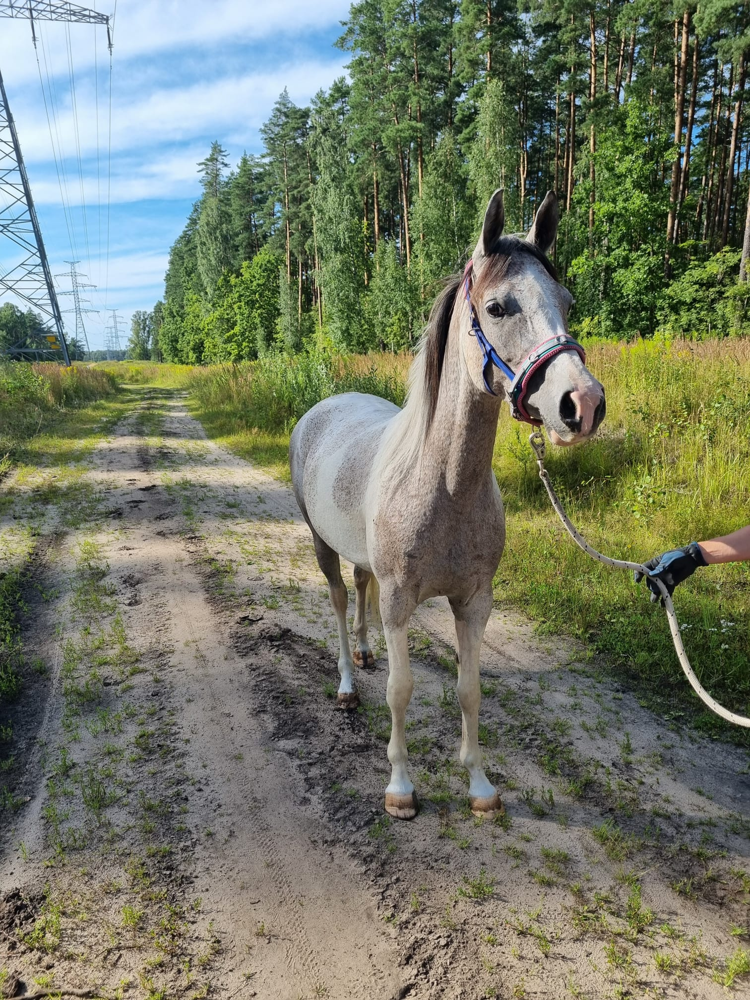
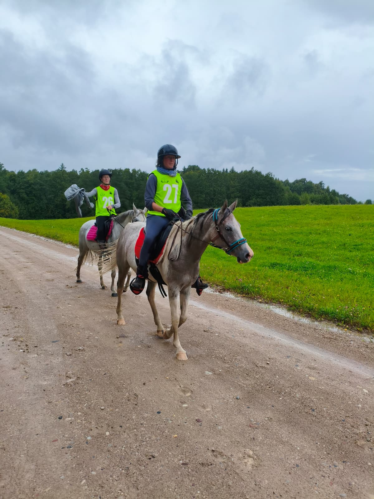

Lizzy de l'Urière

About Lizzy
She has great gaits and an incredible pedigree including Ismael de l'Urière (French stallion, CEI qualified), son of Craklin Hotspots (USA), and also including strong Egyptian blood as well as names which are well known within traditional Spanish Arabian breeding.
Strengths of this pedigree
- Excellent diversity of bloodlines with no obvious close inbreeding
- Strong concentration of established Spanish Arabian breeding
- Egyptian influence adding refinement and type
- Crabbet/American blood contributing soundness and athletic ability
- French endurance influences in the maternal family
Suitability
Based on the pedigree alone (without performance records), she would appear best suited for:
Pedigree

Documents & Downloads
Media Gallery


